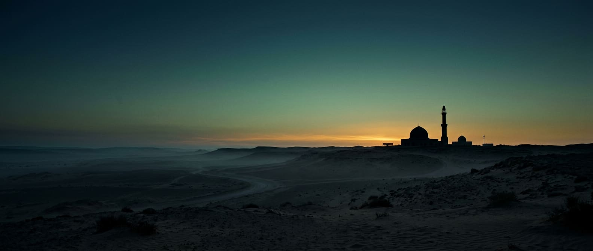

روتين الاستيقاظ بدون جوال
ابدأ صباحك بخطوات واضحة بعيداً عن الشاشة، وأنجز عاداتك واحدة تلو الأخرى، وحافظ على الستريك اليومي.

متوفر الآن للأندرويد · الإصدار الأول
رفيقك اليومي من أذان الفجر إلى آخر الليل. صلاتك وذكرك وصحتك في مكان واحد، بلا تشتت ولا زحمة، لتبني عادات تثبت معك يوماً بعد يوم.
صباح الخير، عبدالله
يومك اليوم
الستريك اليومي
12 يوم متتالي
الأفضل
21
شرب الماء
990 / 1980 مل
اضغط العلبة · 330 مل
الصلوات
3/5
جرّب: اضغط على الخطوات والعلب والصلوات
﴿ وَأَن لَّيْسَ لِلْإِنسَانِ إِلَّا مَا سَعَىٰ ﴾
سورة النجم · ٣٩
كل خطوة في مسارك تُحسب — صلاة في وقتها، ذكر بعد غفلة، كوب ماء، ومشي بعد جلوس طويل.
أربع ركائز ليوم متوازن
مسار يربط العبادة بالعافية وترتيب الحياة في روتين واحد، بدل ما تتنقل بين عشرة تطبيقات.
الصلوات الخمس، النوافل، وأذكار تحفظ مكانك.
هدف 10,000 خطوة يومياً بعداد واضح ومحفّز.
6 علب ماء × 330 مل، تتابعها بلمسة واحدة.
مفكرة يومية وروتين صباحي بدون جوال.
المميزات
ابدأ صباحك بخطوات واضحة بعيداً عن الشاشة، وأنجز عاداتك واحدة تلو الأخرى، وحافظ على الستريك اليومي.
تتبّع الصلوات الخمس والنوافل، واقرأ الأذكار بقارئ تفاعلي يحفظ مكان وقوفك.
أذكار المساء · متوقف عند 14 من 24
10,000
عداد خطوات يحسب تقدمك ويكافئك عند إتمام الهدف.
6 علب × 330 مل — حوالي 2 لتر يومياً.
اكتب أو تكلّم في مفكرتك اليومية، وشوف تقدمك بوضوح في آخر 14 يوم.
مركز التحديثات
نطوّر التطبيق باستمرار. هنا تلقى كل إصدار وما يحمله.
المزيد من التحديثات قريباً…
الأسئلة الشائعة
إجابات سريعة على أكثر الأسئلة تكراراً.
نعم، مسار مجاني بالكامل وبدون إعلانات مزعجة.
حمّل الملف، ثم افتحه واسمح بالتثبيت من مصادر غير معروفة عند الطلب، وبعدها اضغط تثبيت.
أكيد، افتح نسخة الويب من سفاري واختر "إضافة إلى الشاشة الرئيسية" ليعمل كتطبيق.
نعم، تقدمك والستريك ومكانك في الأذكار يتحفظ تلقائياً على جهازك.
خطوة صغيرة كل يوم، تصنع فرقاً كبيراً.